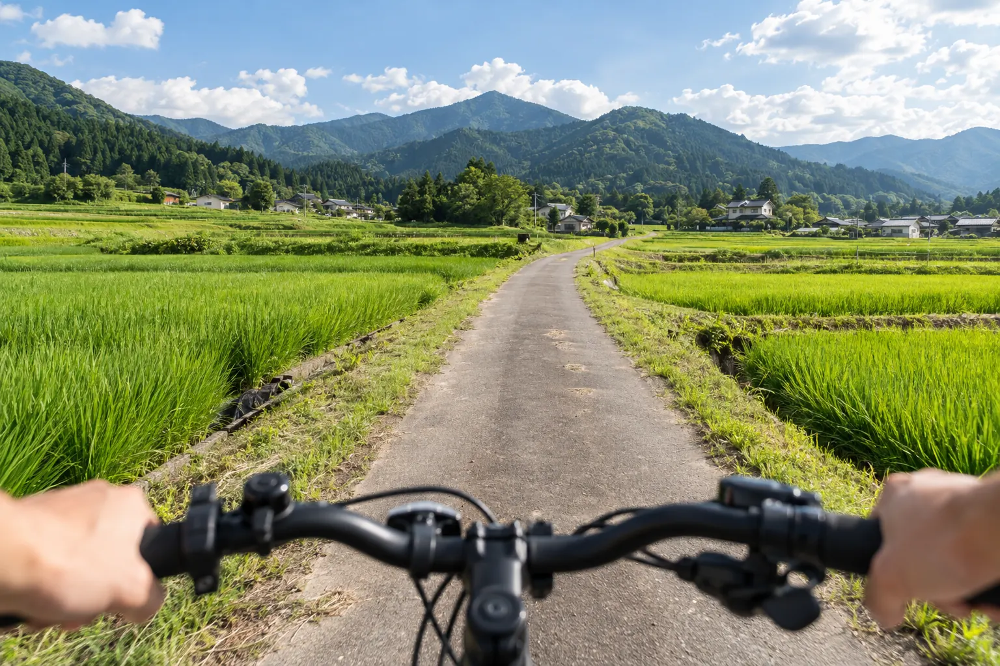
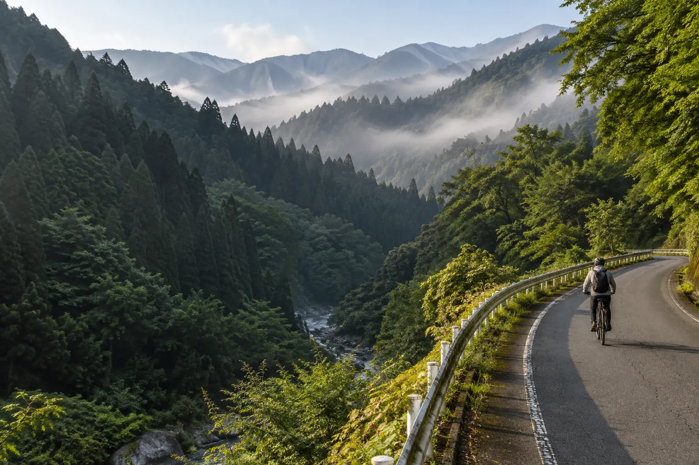
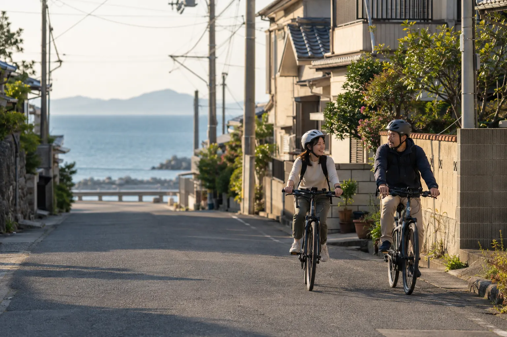
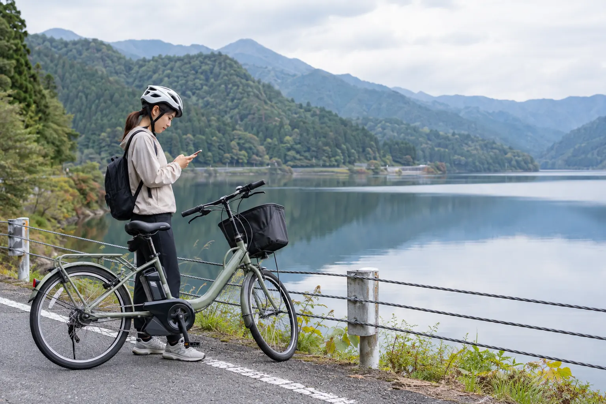
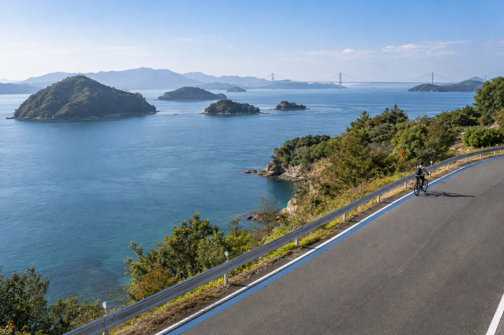
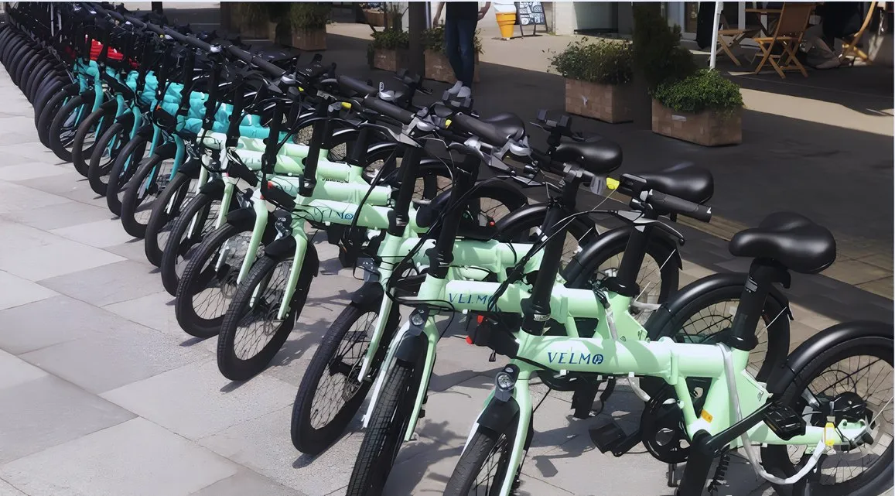
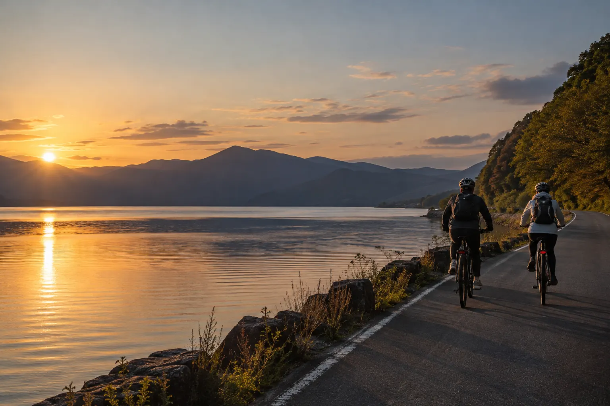

NAVIGATION
迷わず、奥まで。
歴史・自然・グルメなどからコースを選ぶと、地図のナビがスポットを順番に案内します。到着は自動で検知し、次の目的地へつなぎます。
- エリアに合わせたコース表示
- 周辺スポットの表示
- お気に入りに保存

コースを選んで走り出すだけで、スポットの解説が流れ、気になったことはその場で聞ける。nexpotは、自転車で地域をめぐる人のための観光ガイドアプリです。

NAVIGATION
歴史・自然・グルメなどからコースを選ぶと、地図のナビがスポットを順番に案内します。到着は自動で検知し、次の目的地へつなぎます。

AUDIO GUIDE
スポットの範囲に入ると、解説音声が自動で再生されます。スマートフォンを操作しなくても、その場所の話が始まります。

AI GUIDE
声でも文字でも質問できます。地域の資料をもとに、AIがガイドのように、音声と文字で答えます。
映像はアプリの開発中の画面です。

訪れた場所にちなんだ3択クイズ。解説つきで理解が深まります。
クイズに正解すると、特典コードがもらえます。
距離、時間、訪れたスポットを記録し、コースを5段階で評価できます。
累計の走行距離や完走数、クイズの正答率を見返せます。
コース情報も音声ガイドも、選んだ言語で楽しめます。
通信に失敗しても、ワンタップで再試行できます。
iPhone・Androidに対応予定。アプリは現在、公開に向けて準備を進めています。
FOR REGIONS
自治体・観光事業者のみなさまと、その土地ならではのコースをつくります。電動アシスト自転車の導入やメンテナンスも、あわせてご相談いただけます。

地域が用意した資料をもとにAIが回答。クイズも資料から作成するので、問題づくりの負担はありません。
訪れたスポット、完走したコース、AIへの質問を、個人を特定しない統計データとして活用できます。
日本語と英語に対応。中国語・スペイン語・韓国語も順次拡大を予定しています。
スマートロックと連携し、QRコードで解錠。既存の車両にも取り付けできます。
HOW TO START
解説の原稿や音声、クイズは、いまある観光資料をもとに制作します。ご用意いただくものは、お手元にあるもので構いません。
周遊コースとスポットを一緒に設計します。
スポット情報、写真、パンフレットなどをご提供いただきます。
解説原稿と英語版、AI音声、クイズを制作します。
実際に走って調整し、アプリで公開します。
アプリの利用は原則無料です。レンタサイクルの料金など、導入先が設定する利用料は別途かかる場合があります。
日本語と英語に対応しています。コース情報も音声ガイドも、選んだ言語で楽しめます。中国語・スペイン語・韓国語も順次拡大を予定しています。
スポットの名称や所在地、写真、パンフレット、案内板の文面など、お手元にあるもので構いません。形式は問いません。解説の原稿や音声、クイズは、それらの資料をもとに制作します。
地域が用意した資料を参照して、回答の根拠にします。不適切な質問には答えない安全チェックも備えています。
スマートロックは既存の車両にも取り付けできます。レンタサイクル連携は導入準備中のため、提供時期はご相談ください。
アプリのコンテンツ制作にかかる期間は、コースとスポットの数によって変わります。導入の規模に合わせて、お打ち合わせでご案内します。
